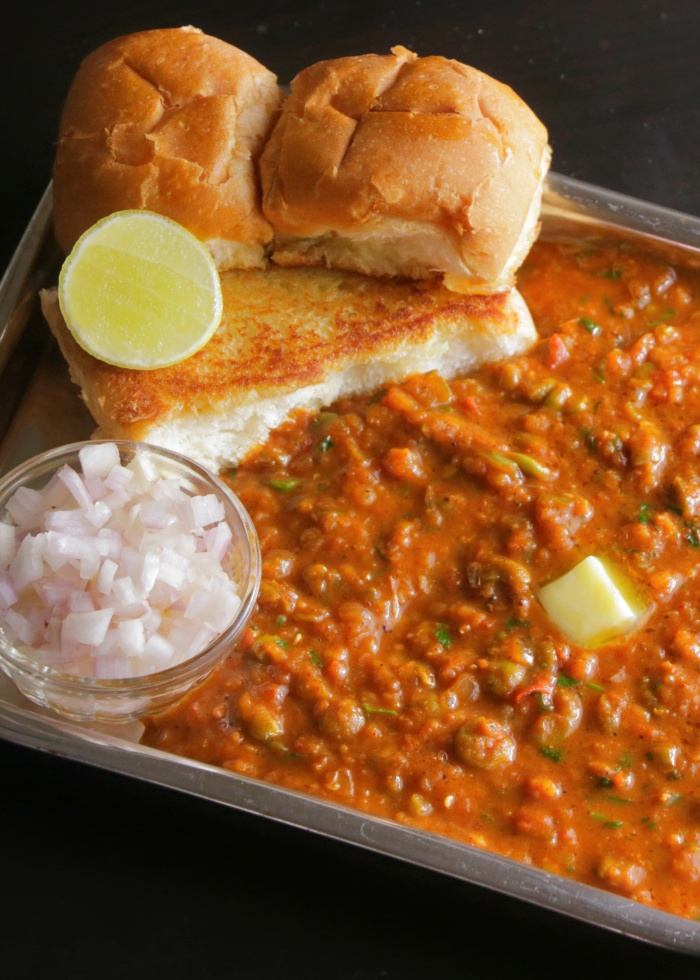

Pav Bhaji

Description
Ingredients
- 2 tbsp Oil
- 1/2 cup Butter
- 3/4 cup Chopped Onions
- 3/4 cup Chopped Capsicum
- 3/4 cup Fresh Peas
- 1 tbsp Ginger Garlic Paste
- 1/2 cup Diced Tomatoes
- 3/4 cup Well cooked Potatoes
- 1 tsp kasuri methi(dried fenugreek leaves
- 2 tsp kashmiri mirchi
- salt
- 2 tbsp chopped green coriander
- 2 Pav Bread
Steps
- Heat oil and melt 2 spoons of butter in a pan and add Onions, Capsicum, and Peas and cook for 2 minutes. That is,
cook until the onions become soft.
- Now add Ginger Garlic Paste and fry for a minute, add Tomatoes and cook again, until soft.
- Now add Salt, Kasuri Methi, Mirchi Powder, and Pav Bhaji Masala and add the Potatoes fried and cooked. Mix well.
- Take a Masher and smash all the cooked vegetables into a soft paste. The more you mash the vegetables, the
creamier the Bhaji is.
- Now add 300 ml water and cook on high flame until the vegetables come together. If the Bhaji is too thick, add
some more water.
- Now add Green Coriander and ¼ cup Butter and keep stirring until the whole mixture thickens and then remove from
fire.
- Melt 2 tsps of Butter, cut a Pav bread into half and toast until the bread soaks up the Butter and becomes Crispy.
- Serve hot with Bhaji, fresh Lime slices and Onions.